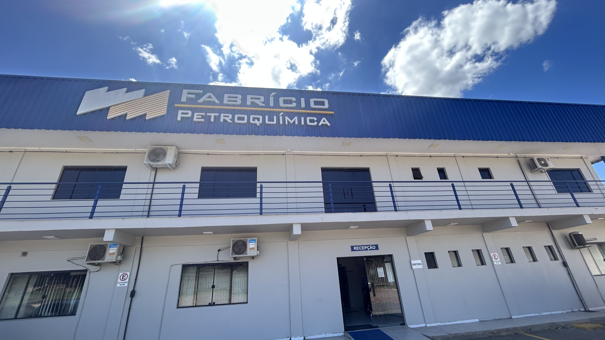
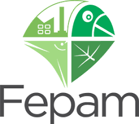
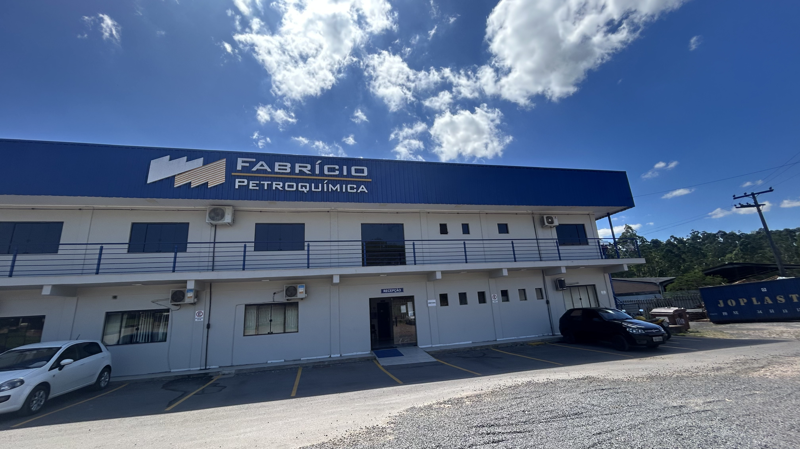

Micronização de Plásticos
Transformação de materiais em pós finos com alta precisão granulométrica para aplicações industriais exigentes.
- → Controle rigoroso de granulometria
- → Fluidez conforme necessidade
- → Adaptação às necessidades do cliente

Tecnologia, qualidade e sustentabilidade no fornecimento de matéria-prima próximo ao III Polo Petroquímico.

A Fabrício Indústria Petroquímica é uma empresa moderna localizada próximo ao III Polo Petroquímico, em Triunfo-RS. Com 6.000 m² de área construída, atuamos com excelência na recuperação, micronização e industrialização de plásticos pós-indústria.
Nosso referencial está na tecnologia, na qualidade dos processos, no laboratório próprio e nosso compromisso com a satisfação do cliente.
Transformação de materiais em pós finos com alta precisão granulométrica para aplicações industriais exigentes.

Reprocessamento e reciclagem de resíduos industriais, transformando-os em matéria-prima.

Produção de insumos específicos para as linhas de injeção, sopro, extrusão e rotomoldagem — conforme a especificação do cliente.
Produzimos nas formas de pellets e micronizados em uma ampla gama de polímeros e cores, formulados conforme a aplicação final de cada cliente.

Nosso compromisso com a excelência técnica e a preservação do ecossistema em cada processo industrial.
Nosso laboratório é equipado para realizar testes, garantindo a integridade, padronização e reprodutibilidade dos materiais entregues aos nossos clientes.

"A Fabrício Petroquímica na sua atividade busca a melhoria contínua do seu Sistema de Gestão da Qualidade, dos seus produtos, requisitos aplicáveis e dos processos e serviços garantindo a satisfação de seus clientes de acordo com as especificações, prazos e necessidades, bem como com a capacitação de seus colaboradores."
A Fabrício Petroquímica mantém processos auditados que garantem a rastreabilidade, padronização e melhoria contínua, atendendo aos mais exigentes requisitos internacionais.
Operamos sob a regência da FEPAM, garantindo que nosso beneficiamento de resinas pós-indústria contribua para a logística reversa sem agredir o ecossistema local.


Contamos com 6.000 m² de área construída, abrigando maquinário moderno e processos otimizados.
Possuímos frota própria, o que nos permite agilidade na coleta de resíduos e entrega de produtos finais na região metropolitana.
Operamos dentro da lógica da logística reversa: recuperamos polímeros descartados pela indústria, reprocessamos e devolvemos ao ciclo produtivo com qualidade técnica equivalente à da resina virgem.
Confira nossas vagas abertas ou envie seu currículo para o nosso banco de talentos.
Rodovia TF-10, 32357
Rincão dos Pinheiros
III Polo Petroquímico
Triunfo-RS · CEP 95853-000
(51) 3457-3056
Segunda a sexta
7:30 às 17:00